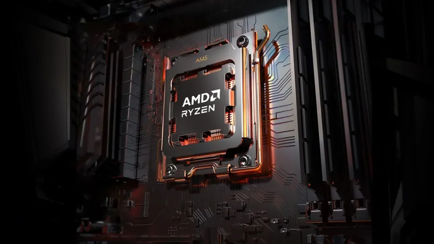
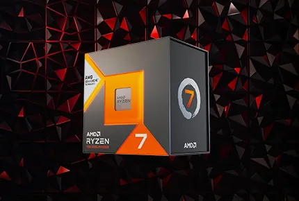

Le processeur est le cerveau d’un ordinateur : c’est lui qui effectue les calculs et permet à ton PC de faire fonctionner les jeux, les applications, les vidéos, etc.Le modèle Ryzen 7 9800X3D est un processeur très puissant créé pour les jeux et les tâches qui demandent beaucoup de calculs. Il a 8 cœurs et 16 threads, ce qui signifie qu’il peut gérer beaucoup de travail en même temps sans ralentir.

En résumé, c’est un processeur très puissant, surtout adapté aux ordinateurs de jeux modernes ou aux tâches lourdes comme le montage vidéo.